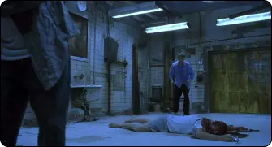

Saw : L'Horreur Psychologique qui Hante nos Cauchemars
Depuis sa première sortie en 2004, le film "Saw" a laissé une empreinte indélébile dans l'univers du cinéma
d'horreur.
Réalisé par James Wan et écrit par Leigh Whannell, ce film est devenu le premier opus d'une franchise
légendaire, connue
pour son mélange unique d'horreur viscérale, de violence crue, d'énigmes tortueuses et d'exploration
profonde de la
psyché humaine.
UN CAUCHEMAR SANS FIN
L'aspect horrifique de "Saw" est un véritable tour de force. Dès les premières minutes, les spectateurs sont
plongés
dans un cauchemar sans fin. Les scènes de torture, cruellement imaginées par le tueur en série Jigsaw,
défient
l'imagination et provoquent une réaction viscérale chez le public.
Amanda, dans le piège à ours inversé
UN HUIT-CLOS OPPRESSANT
L'ambiance du film est étouffante, et l'action se déroule principalement dans une salle de bain délabrée, sombre et
crasseuse, où les victimes de Jigsaw se réveillent enchaînées et désorientées avec peu d'espoir de s'échapper.

Adam & Lawrence Gordon, enfermés dans une salle de bain
UNE QUESTION DE VIE OU DE MORT
Jigsaw, le cerveau derrière les pièges, ne tue pas ses victimes directement. Au lieu de cela, il les force à prendre des
décisions terrifiantes pour leur propre survie montrant la capacité de l'être humain à faire des choix désespérés
lorsque sa vie est en jeu.
Lawrence Gordon, avant d'être capturé par Jigsaw
Les flashbacks et les révélations sur le passé de Jigsaw ajoutent une dimension psychologique profonde au film, incitant
les spectateurs à réfléchir à la nature du bien et du mal.
UNE MARQUE INDÉLIBILE DANS L’HISTOIRE DU CINÉMA
"Saw" a réussi à captiver les amateurs d'horreur grâce à son mélange unique de violence brutale, d'ambiance oppressante
et d'exploration des recoins les plus sombres de la psyché humaine. Le film a engendré une série de suites qui ont
continué à explorer ces thèmes, tout en laissant une marque indélébile dans l'histoire du cinéma d'horreur.
Scène finale du film
Pour ceux qui cherchent une expérience cinématographique qui les fera frissonner et réfléchir, "Saw" reste un
incontournable. Mais attention, une fois que vous avez plongé dans l'univers de Jigsaw, il n'y a pas de retour en
arrière.